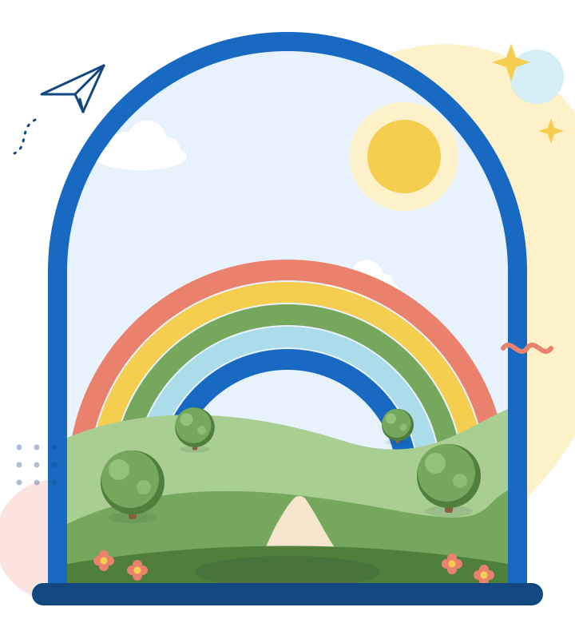
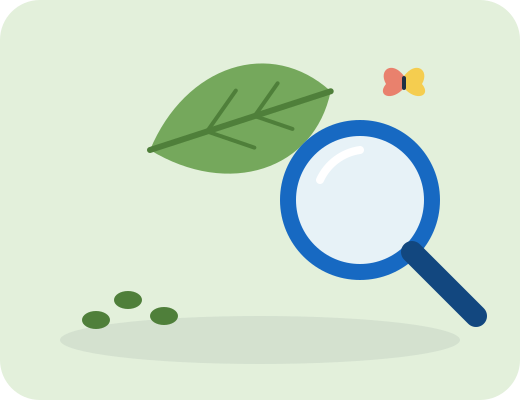
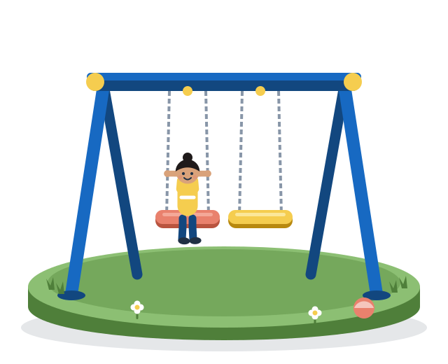
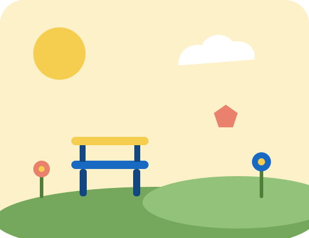
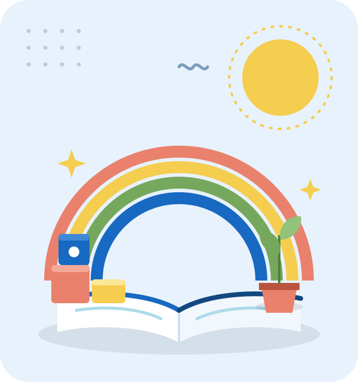
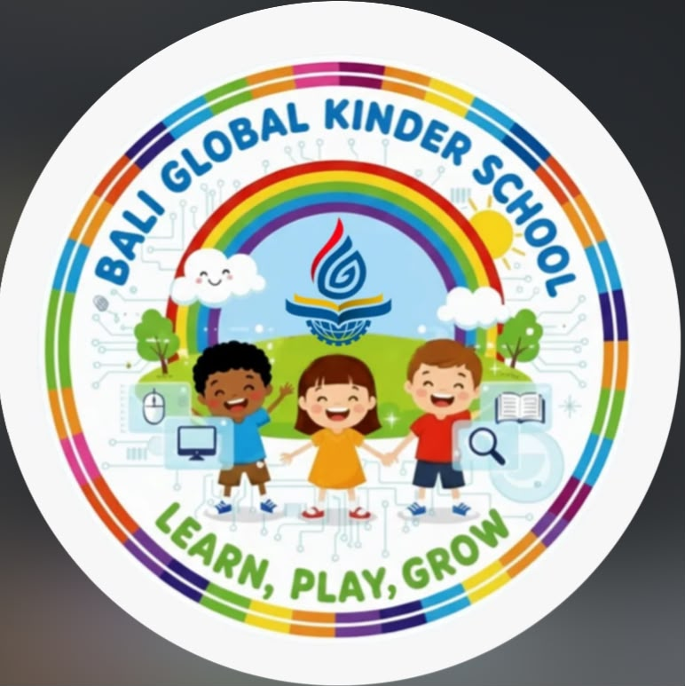
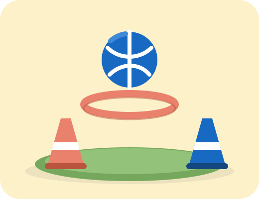
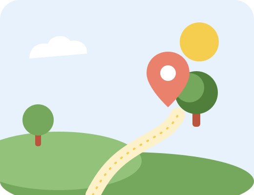

Eksplorasi
Anak mengamati, bertanya, dan mencoba untuk mengenal dunia di sekitarnya.
Bali Global Kinder School
Kenali lingkungan belajar yang mendukung anak menjelajah, mencoba hal baru, dan bertumbuh melalui pengalaman sehari-hari.

Mulai dari mana

01Empat cara anak menemukan hal baru lewat pengalaman sehari-hari.
Lihat program
02Pilih satu permainan dan lihat apa yang dilatih anak ketika bermain.
Mulai bermain
03Panduan melihat lingkungan belajar dan gambaran keseharian anak.
Lihat lingkunganSiapkan pesan minat pendaftaran dan hubungi pihak sekolah.
Mulai dari siniJuga tersedia:Tentang SekolahKehidupan SekolahBerita dan KegiatanFAQKontak dan Lokasi


Mengenal sekolah
Bali Global Kinder School adalah sekolah anak usia dini dengan semboyan Learn, Play, Grow.
Informasi resmi seperti biaya, usia penerimaan, dan jadwal dikonfirmasi langsung oleh pihak sekolah.
Tentang SekolahGambaran kegiatan belajar
Gambaran umum kegiatan belajar anak usia dini. Program resmi sekolah dikonfirmasi langsung oleh pihak sekolah.
Anak mengamati, bertanya, dan mencoba untuk mengenal dunia di sekitarnya.
Warna, bentuk, dan bahan sederhana menjadi cara anak mengekspresikan ide dan perasaannya.
Bercerita, mendengarkan, dan bertanya membantu anak menyampaikan pikirannya.

Bergerak bebas melatih otot, keseimbangan, dan kemampuan bekerja sama dengan teman.
Dunia bermain
Pilih satu permainan dan lihat bagaimana bermain membantu anak belajar.


Ilustrasi konsepLingkungan dan keseharian
Foto resmi akan ditampilkan setelah tersedia. Sementara itu, pilih satu hal yang ingin kamu perhatikan.
Pengajar
Kehidupan sekolah
Testimoni
Lihat alur pendaftaran, lalu sampaikan pertanyaanmu kepada pihak sekolah.